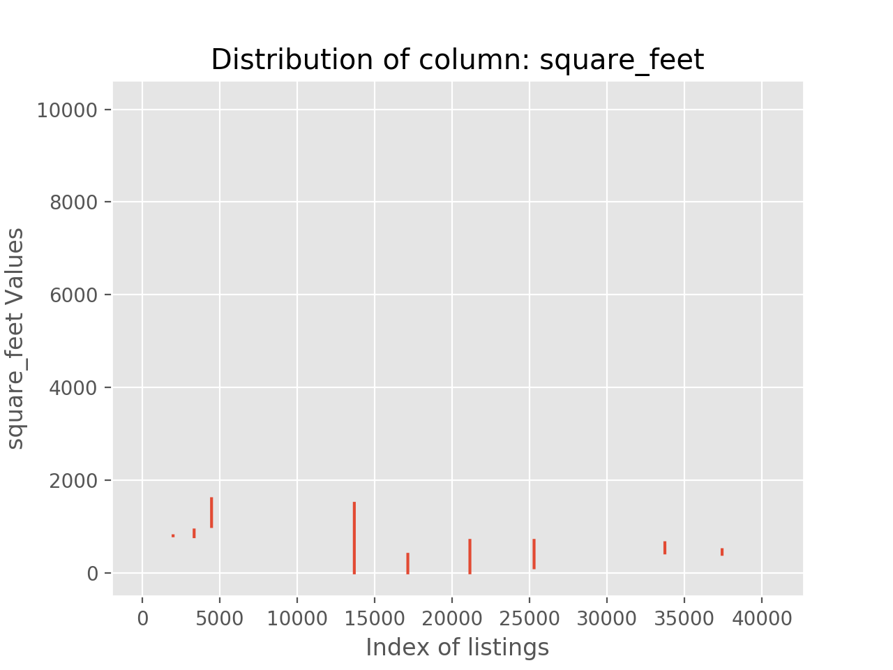
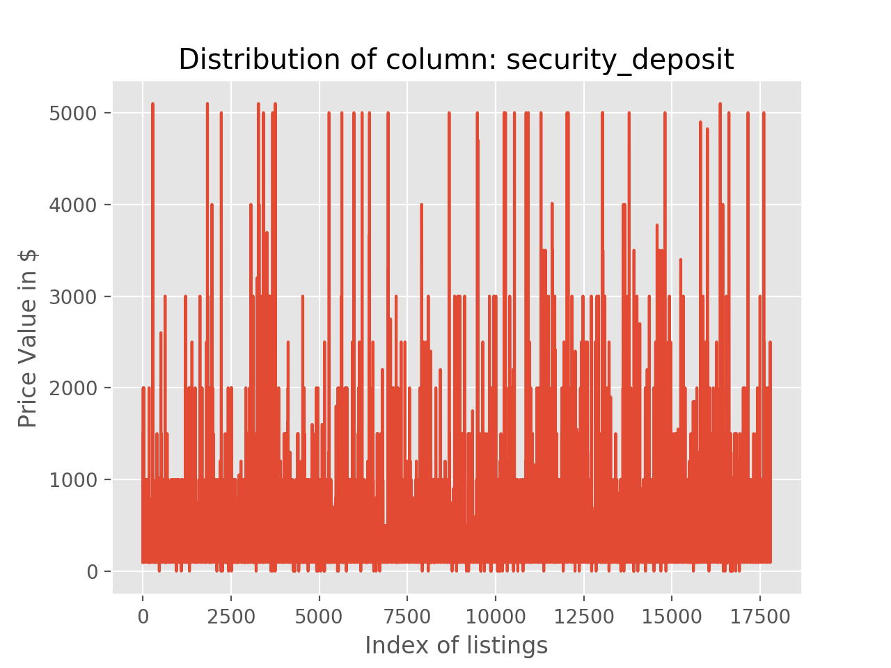
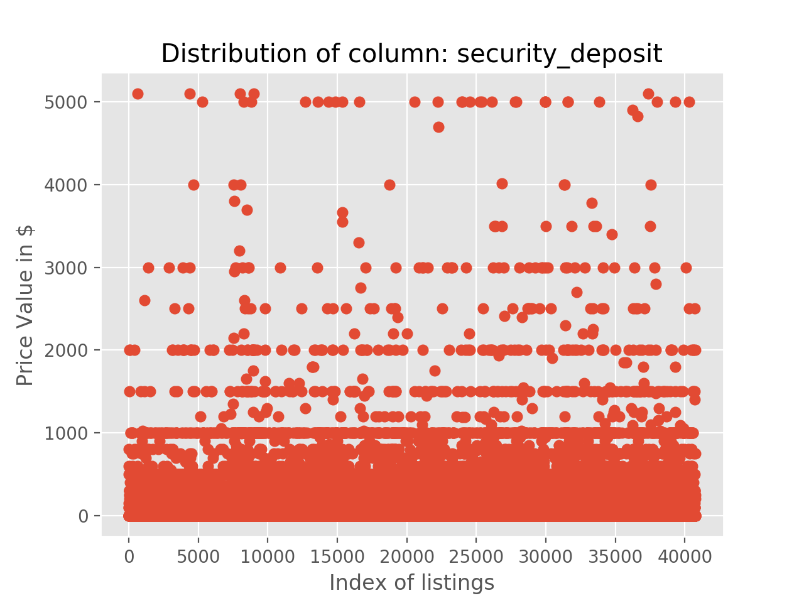

NOTE: Click on the tabs below to be able to view the graph.

INFERENCES/MEASURES
This field is an example of sparse data. As it can be seen, most of the data is missing.
Although the field can be an important parameter in analysis and could be used to decide maximization of space by house price; the amount of null values has rendered it useless and beyond usage for analysis.

INFERENCES/MEASURES
This field is also example of sparse data. As it can be seen, a major portion of the data is missing. The total number of listings are around 47k but the field data is around 17.5k
Although the field is not a part of the analysis; it is a striking example of data with missing values beyond repair.

INFERENCES/MEASURES
This field is a scatter plot version of the previously discussed field. The only difference lies in the fact that null values have been replaced by zero.
The sparseness can be seen with the majority of values being zero.